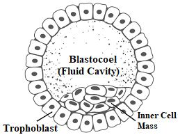
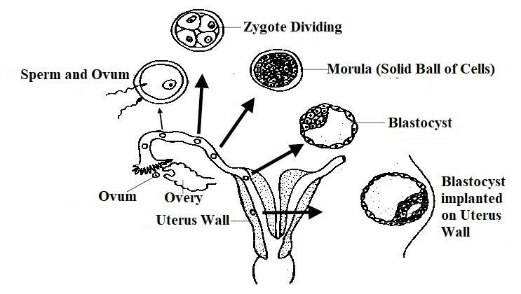
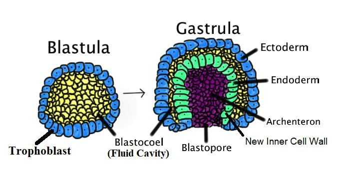
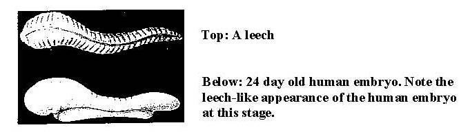
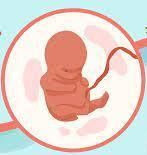
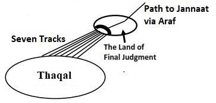

FIGURE 23.2: The Nuthfah / Blastocyst The blastocyst, filled with fluid, is referred to as nutfatan (droplet) in these verses. It contains a small inner cell mass that eventually forms the definitive structure of the embryo. The outer shell, or trophoblast, supplies nutrients to the embryo and develops into a major part of the placenta.

চিত্র 23_2 / Figure 23_2
চিত্র 23.2: নুথফাহ / ব্লাস্টোসিস্ট ব্লাস্টোসিস্ট, তরল ভরা, এই আয়াতগুলিতে নুটফাটান (ফোঁটা) হিসাবে উল্লেখ করা হয়েছে। এটিতে একটি ছোট অভ্যন্তরীণ কোষের ভর রয়েছে যা অবশেষে ভ্রূণের নির্দিষ্ট কাঠামো গঠন করে। বাইরের শেল, বা ট্রফোব্লাস্ট, ভ্রূণে পুষ্টি সরবরাহ করে এবং প্লাসেন্টার একটি প্রধান অংশে বিকশিত হয়।
চিত্র 23_2 / Figure 23_2
FIGURE 23.3: Traveling down the Fallopian Tube

চিত্র 23_3 / Figure 23_3
চিত্র 23.3: ফ্যালোপিয়ান টিউবের নিচে ভ্রমণ
চিত্র 23_3 / Figure 23_3
The blastocyst reaches the womb (uterus) around day 5 and implants into the uterine wall by day 6, where it begins to receive nourishment through the mother's bloodstream. Thus, the nutfah (blastocyst) becomes firmly fixed in its place of rest (the uterus), as the verse states: "Then, We made him as a nutfah (droplet) in a place of rest, firmly fixed." Then We made the droplet (nutfah / blastocyst) into a leech (alaqatan).
ব্লাস্টোসিস্ট 5 তম দিনে গর্ভাশয়ে (জরায়ু) পৌঁছায় এবং 6 তম দিনে জরায়ু প্রাচীরে ইমপ্লান্ট করে, যেখানে এটি মায়ের রক্তপ্রবাহের মাধ্যমে পুষ্টি পেতে শুরু করে। সুতরাং, নুতফাহ (ব্লাস্টোসিস্ট) তার বিশ্রামের জায়গায় (জরায়ু) দৃঢ়ভাবে স্থির হয়ে যায়, যেমন আয়াতে বলা হয়েছে: "অতঃপর, আমরা তাকে বিশ্রামের জায়গায় একটি নুতফাহ (ফোঁটা) হিসাবে দৃঢ়ভাবে স্থির করেছি।" অতঃপর আমরা ফোঁটা (নুতফাহ/ব্লাস্টোসিস্ট) কে জোঁক (আলাকাতান) বানিয়েছিলাম।
Remarks:
মন্তব্য:
The blastocyst is a sphere of cells. Some cells move inward and produce a three layer embryo.
ব্লাস্টোসিস্ট হল কোষের একটি গোলক। কিছু কোষ ভিতরের দিকে চলে যায় এবং তিন স্তরের ভ্রূণ তৈরি করে।
FIGURE 23.4: Development of Gastrula

চিত্র 23_4 / Figure 23_4
চিত্র 23.4: গ্যাস্ট্রুলার বিকাশ
চিত্র 23_4 / Figure 23_4
Thus, the single-layered blastocyst (blastula) develops into a three-layered gastrula, with each layer giving rise to specific tissues and organs in the developing embryo: a. The ectoderm gives rise to epidermis, the nervous system and to the neural crest. b. The endoderm gives rise to respiratory system and the epithelium of the digestive system including associated organs, such as liver and pancreas. c. The mesoderm gives rise to muscle, bone, and connective tissue. The mesoderm derivatives include the notochord, the heart, blood and blood vessels, the cartilage of the ribs and vertebrae, and the dermis. After gastrulation, the embryo resembles a leech. It clings to the uterine wall just as a leech clings to the skin, drawing nourishment from the endometrium. Detailed knowledge of leech developmental biology provides insight into the mechanisms that establish body plans in animal embryos. Remarkably, the 23 to 24-day-old embryo bears a striking resemblance to a leech (see Figure below).
এইভাবে, এক-স্তরযুক্ত ব্লাস্টোসিস্ট (ব্লাস্টুলা) একটি তিন-স্তরযুক্ত গ্যাস্ট্রুলায় বিকশিত হয়, যার প্রতিটি স্তর বিকাশমান ভ্রূণে নির্দিষ্ট টিস্যু এবং অঙ্গগুলির জন্ম দেয়: ক। ইক্টোডার্ম এপিডার্মিস, স্নায়ুতন্ত্র এবং নিউরাল ক্রেস্টের জন্ম দেয়। খ. এন্ডোডার্ম শ্বসনতন্ত্র এবং লিভার এবং অগ্ন্যাশয়ের মতো সংশ্লিষ্ট অঙ্গ সহ পাচনতন্ত্রের এপিথেলিয়ামের জন্ম দেয়। গ. মেসোডার্ম পেশী, হাড় এবং সংযোগকারী টিস্যুর জন্ম দেয়। মেসোডার্ম ডেরিভেটিভের মধ্যে রয়েছে নটোকর্ড, হৃৎপিণ্ড, রক্ত ও রক্তনালী, পাঁজর ও কশেরুকার তরুণাস্থি এবং ডার্মিস। গ্যাস্ট্রুলেশনের পরে, ভ্রূণটি জোঁকের মতো হয়। এটি জরায়ুর দেয়ালে আঁকড়ে থাকে ঠিক যেমন একটি জোঁক ত্বকে আঁকড়ে থাকে, এন্ডোমেট্রিয়াম থেকে পুষ্টি আহরণ করে। জোঁকের বিকাশমূলক জীববিজ্ঞানের বিশদ জ্ঞান প্রাণী ভ্রূণে দেহের পরিকল্পনা স্থাপনকারী প্রক্রিয়াগুলির অন্তর্দৃষ্টি প্রদান করে। লক্ষণীয়ভাবে, 23 থেকে 24 দিন বয়সী ভ্রূণ একটি জোঁকের সাথে একটি আকর্ষণীয় সাদৃশ্য বহন করে (নীচের চিত্রটি দেখুন)।
FIGURE 23.5: Leech and Human Embryo (Alaqah)

চিত্র 23_5 / Figure 23_5
চিত্র 23.5: জোঁক এবং মানব ভ্রূণ (আলাকাহ)
চিত্র 23_5 / Figure 23_5
In the 7th century, microscopes were unavailable, making it impossible to know that the human embryo has a leech-like appearance. The embryo only becomes visible to the unaided eye in the early part of the fourth week.
7 ম শতাব্দীতে, মাইক্রোস্কোপগুলি অনুপলব্ধ ছিল, যার ফলে মানব ভ্রূণের একটি জোঁকের মতো চেহারা রয়েছে তা জানা অসম্ভব। ভ্রূণটি শুধুমাত্র চতুর্থ সপ্তাহের প্রথম দিকে সাহায্যবিহীন চোখে দৃশ্যমান হয়।
Then, we created the leech into the mudghatan (the chewed lump).
তারপর, আমরা জোঁককে মুডঘাটনে (চিবানো পিণ্ড) তৈরি করি।
Remarks:
মন্তব্য:
Here, 'mudghatan' means 'chewed lump.' Toward the end of the fourth week, the human embryo resembles a chewed lump of flesh. This appearance is due to somites, which look like teeth marks and represent the beginnings, or primordia, of the vertebrae.
এখানে 'মুদ্ঘাটন' মানে 'চিবানো পিণ্ড।' চতুর্থ সপ্তাহের শেষের দিকে, মানব ভ্রূণটি চিবানো মাংসের পিণ্ডের মতো। এই চেহারাটি সোমাইটসের কারণে হয়, যা দেখতে দাঁতের চিহ্নের মতো এবং কশেরুকার প্রারম্ভ বা প্রাইমর্ডিয়াকে প্রতিনিধিত্ব করে।
FIGURE 23.6: At the stage of Chewed Lump

চিত্র 23_6 / Figure 23_6
চিত্র 23.6: চিউইড লাম্পের পর্যায়ে
চিত্র 23_6 / Figure 23_6
Then We made out of the chewed lump bones and clothed the bones in flesh.
অতঃপর চিবানো পিণ্ড থেকে হাড় তৈরি করলাম এবং হাড়গুলোকে মাংসে পরিধান করলাম।
Remarks:
মন্তব্য:
The bones and muscles form within the chewed lump (mudghatan).
চিবানো পিণ্ডের মধ্যে হাড় ও পেশী তৈরি হয় (মুদ্ঘাটন)।
FIGURE 23.7: Developing Bones and Muscles Initially, the bones form as cartilage models, and then the muscles (flesh) develop around them from the somatic mesoderm.

চিত্র 23_7 / Figure 23_7
চিত্র 23.7: হাড় এবং পেশীগুলির বিকাশ প্রাথমিকভাবে, হাড়গুলি তরুণাস্থি মডেল হিসাবে গঠন করে এবং তারপরে সোম্যাটিক মেসোডার্ম থেকে পেশী (মাংস) তাদের চারপাশে বিকাশ লাভ করে।
চিত্র 23_7 / Figure 23_7
Then We developed out of it another creature.
অতঃপর আমি তা থেকে অন্য একটি জীব উদ্ভাবন করেছি।
Remarks:
মন্তব্য:
This refers to the human-like embryo that forms by the end of the eighth week. At this stage, it has distinct human characteristics and contains the primordia of all internal and external organs and parts. After the eighth week, the human embryo is referred to as a fetus.
এটি মানুষের মতো ভ্রূণকে বোঝায় যা অষ্টম সপ্তাহের শেষে গঠন করে। এই পর্যায়ে, এটির স্বতন্ত্র মানবিক বৈশিষ্ট্য রয়েছে এবং এতে সমস্ত অভ্যন্তরীণ এবং বাহ্যিক অঙ্গ এবং অংশগুলির প্রাইমর্ডিয়া রয়েছে। অষ্টম সপ্তাহের পরে, মানব ভ্রূণকে ভ্রূণ হিসাবে উল্লেখ করা হয়।
FIGURE 23.8: Fetus 8 weeks

চিত্র 23_8 / Figure 23_8
চিত্র 23.8: ভ্রূণ 8 সপ্তাহ
চিত্র 23_8 / Figure 23_8
So far, 23,000 genes have been identified in a double helix DNA molecule, accounting for only 2% of its total content. The functions of the remaining 98% are still unknown. The music that begins in the zygote continues until the baby is born and ultimately until life ends in the grave. It is the music of the Supreme Musician. So, blessed be God, the best to create! After that, at length you will die. Again, on the Day of Judgment, you will be raised up. And We have made above you Seven Tracts, and We are never unmindful of Creation.
এখন পর্যন্ত, একটি ডাবল হেলিক্স ডিএনএ অণুতে 23,000 জিন সনাক্ত করা হয়েছে, যা এর মোট বিষয়বস্তুর মাত্র 2%। বাকি 98% এর কার্যাবলী এখনও অজানা। জাইগোটে শুরু হওয়া সঙ্গীত শিশুর জন্ম না হওয়া পর্যন্ত এবং শেষ পর্যন্ত কবরে জীবন শেষ না হওয়া পর্যন্ত চলতে থাকে। এটি সর্বোচ্চ সঙ্গীতজ্ঞের সঙ্গীত। তাই, ধন্য ঈশ্বর, সৃষ্টির সেরা! এর পরে, দৈর্ঘ্যে আপনি মারা যাবেন। আবার কিয়ামতের দিন তোমাদেরকে পুনরুত্থিত করা হবে। আর আমি তোমাদের উপরে সাতটি ট্র্যাক্ট তৈরি করেছি এবং আমরা সৃষ্টি সম্পর্কে কখনই উদাসীন নই।
Remarks:
মন্তব্য:
In the end, this universe (Samawaat) will be rolled up and collapse into a Big Crunch. Allah will reprogram it and revive it in the blink of an eye, causing the universe to restart. When it reaches the state of Thaqal (Heavy Mass), it will be temporarily halted for Judgment and Salvation.
শেষ পর্যন্ত, এই মহাবিশ্ব (সামাওয়াত) গুটিয়ে যাবে এবং একটি বিগ ক্রাঞ্চে ভেঙে পড়বে। আল্লাহ এটিকে পুনরায় প্রোগ্রাম করবেন এবং চোখের পলকে এটিকে পুনরুজ্জীবিত করবেন, যার ফলে মহাবিশ্ব পুনরায় চালু হবে। যখন তা থাকাল (ভারী ভর) অবস্থায় পৌঁছাবে, তখন তা বিচার ও পরিত্রাণের জন্য সাময়িকভাবে বন্ধ হয়ে যাবে।
FIGURE 23.9: Seven Tracks

চিত্র 23_9 / Figure 23_9
চিত্র 23.9: সাতটি ট্র্যাক
চিত্র 23_9 / Figure 23_9